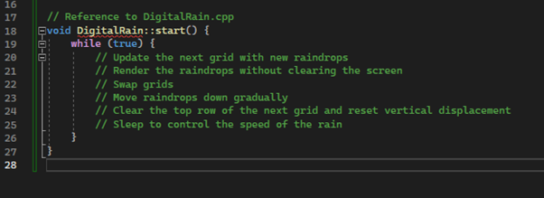
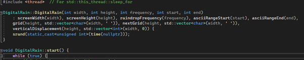
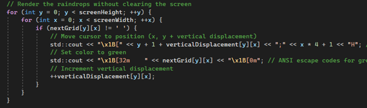

Design and Test
I adopted an object-oriented approach to encapsulate the Digital Rain simulation's components, including the grid layout, raindrop behaviour, and rendering mechanism. I designed classes to represent the simulation and individual raindrops, ensuring modularity and extensibility. This involved defining clear interfaces and data structures to facilitate seamless interaction between components.
Algorithm
Algorithmic approach
The core algorithm behind the Digital Rain simulation revolves around the management of raindrop descent and rendering. Raindrops are randomly generated at the top of the screen and gradually descend while leaving a trail of characters behind. The algorithm ensures smooth descent and prevents overlap between raindrops, resulting in a visually appealing effect.
Object oriented programming
Object-oriented programming (OOP) played a crucial role in structuring the Digital Rain simulation codebase. Classes such as Digital Rain and Raindrop were designed to encapsulate the simulation's logic and data. This modular approach enabled easier maintenance, extensibility, and code reuse. Each class has an interface, promoting clear communication between different components of the simulation.
Sustainability
A key focus throughout the development process was sustainability. This involved writing clean, maintainable code that could withstand future changes and enhancements. Comments and documentation were added where necessary to improve code readability and understanding.
New Technologies Learned
One of the new technologies I explored was the ANSI escape codes for terminal manipulation. This allowed me to control the cursor movement, text colour and formatting enhancing the visual aspect of digital rain. This can be seen below Multithreading with std:thread explored multithreading the std::thread library. It was employed to achieve a concurrent execution of the digital rain simulation alongside the main program flow, ensuring smooth animations rendering without blocking the user input or the operation.
Problem Solving
Several problem-solving initiatives were undertaken to overcome challenges encountered during development. Optimal raindrop rendering, preventing flickering and overlap, required innovative solutions. The introduction of vertical displacement tracking, and manipulation of ANSI escape codes played a pivotal role in achieving smooth raindrop descent. Flashing of the console a flickering effect was solved by rendering.
Modern C++
...